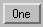

The WIDGET_BUTTON f unction creates button widgets. A button widget is a pushbutton that is activated by moving the mouse cursor over the widget button and pressing a mouse button.
|
 |
Buttons placed into exclusive or non-exclusive bases (created via the EXCLUSIVE or NONEXCLUSIVE keywords to WIDGET_BASE function) are created as two-state “toggle” buttons, which are controlled by such bases.
For more information on creating buttons, see About Button Widgets .
Widget buttons can have either a text label (specified as a string value to the VALUE keyword) or a graphic symbol in the form of a bitmap. To specify an image for a menu button, use the IMAGE keyword (Windows 7 only).
Bitmap labels are specified in one of the following ways:
| 1. | By setting the VALUE keyword equal to a string containing the name of an image file in BMP format, and setting the BITMAP keyword: |
button=WIDGET_BUTTON(base, VALUE='mybitmap.bmp', /BITMAP)
The BMP file may either be color indexed (4-bit and 8-bit), or may be a 24-bit RGB image.
BMP files that are 32-bit (RGBA) are not allowed. To use an RGBA image, you should read in the bitmap data from the file, and then pass in the value as an n x m x 4 byte array.
For 16- and 256-color bitmap files, IDL uses the color of the pixel in the lower left corner as the transparent color. All pixels of this color become transparent, allowing the button color to show through.
Displaying bitmapped buttons on 8-bit color X Windows displays may require using additional X colormap colors to allocate colors used by the bitmaps. If the required colormap colors are not available, the button bitmap may not display properly.
To modify the bitmap after creation, use the /BITMAP keyword with WIDGET_CONTROL:
WIDGET_CONTROL, button, SET_VALUE='mybitmap2.bmp', /BITMAP
| 2. | By setting the VALUE keyword equal to an n x m bitmap byte array in which each bit represents a pixel with a value of either zero or one. (Arrays of this type can be produced using the CVTTOBM function.) This method creates a black-and-white bitmap label: |
button=WIDGET_BUTTON(base, VALUE=bw_arr)
To modify the bitmap after creation, simply set a new value using WIDGET_CONTROL:
WIDGET_CONTROL, button, SET_VALUE=bw_array2
| 3. | By setting the VALUE keyword equal to an n x m x 3 byte array that represents a 24-bit color image, interleaved by plane, with the planes in the order red, green, blue. There is no transparent pixel in 24-bit button labels. This method creates a color bitmap label: |
button=WIDGET_BUTTON(base, VALUE=color_array)
To modify the bitmap after creation, simply set a new value using WIDGET_CONTROL:
WIDGET_CONTROL, button, SET_VALUE=color_array2
| 4. | By setting the VALUE keyword equal to an n x m x 4 byte array that represents a 32-bit color image, interleaved by plane, with the planes in the order red, green, blue, alpha. This method creates a color bitmap label that allows various levels of the background to show through, depending on the opacity of each pixel: |
button=WIDGET_BUTTON(base, VALUE=color_array)
To modify the bitmap after creation, simply set a new value using WIDGET_CONTROL:
WIDGET_CONTROL, button, SET_VALUE=color_array2
See About Button Widgets for additional details on creating image files and arrays for use as button bitmaps.
Result = WIDGET_BUTTON( Parent [, ACCELERATOR = string ] [, / ALIGN_CENTER | , / ALIGN_LEFT | , / ALIGN_RIGHT ] [, / BITMAP ] [, / CHECKED_MENU ] [, / DYNAMIC_RESIZE ] [, EVENT_FUNC = string ] [, EVENT_PRO = string ] [, / FLAT ] [, FONT = string ] [, FRAME = width ] [, FUNC_GET_VALUE = string ] [, GROUP_LEADER = widget_id ] [, / HELP ] [, IMAGE = byte array ] [, KILL_NOTIFY = string ] [, / MASK ] [, / MENU ] [, / NO_COPY ] [, / NO_RELEASE ] [, NOTIFY_REALIZE = string ] [, PRO_SET_VALUE = string ] [, / PUSHBUTTON_EVENTS ] [, SCR_XSIZE = width ] [, SCR_YSIZE = height ] [, / SENSITIVE ] [, / SEPARATOR ] [, TAB_MODE = value ] [, TOOLTIP = string ] [, / TRACKING_EVENTS ] [, UNAME = string ] [, UNITS ={0 | 1 | 2}] [, UVALUE = value ] [, VALUE = value ] [, X_BITMAP_EXTRA = bits ] [, XOFFSET = value ] [, XSIZE = value ] [, YOFFSET = value ] [, YSIZE = value ] )
X Windows Keywords: [, RESOURCE_NAME = string ]
The returned value of this function is the widget ID of the newly-created button.
The widget ID of the parent for the new button widget. The parent of a button widget must be one of the following:
| 1. | A base widget. |
| 2. | A widget created using the MBAR keyword on a top-level base. |
| 3. | A button widget which has the MENU keyword set. |
Set this keyword to assign a key combination that will activate a menu item or button event using the keyboard instead of the mouse. The value of the keyword is a case-insensitive string that specifies zero or more modifier keys ( Ctrl , Shift , or Alt ) and one other key. (The developer must take special steps to enable Alt key accelerators for Macintosh users). See Enabling Alt Key Accelerators on Macintosh for details.) If there is more than one item in the string, a “+” must separate them. For example:
bRun = WIDGET_BUTTON( base, VALUE = "Run", ACCELERATOR = "F5" )
bPause = WIDGET_BUTTON( base, VALUE = "Pause", $
ACCELERATOR = "Ctrl+F5" )
bResume = WIDGET_BUTTON( base, VALUE = "Resume", $
ACCELERATOR = "Ctrl+Shift+F5" )
Accelerators can be defined for menu items and various types of WIDGET_BUTTON on Windows. However, on UNIX, only menu item accelerators are supported. Context menu items do not support accelerators on any platform.
The valid combinations are:
|
Accelerator Keys |
Description |
|
Ctrl , Shift , or Alt plus an alphanumeric key |
A modifier key plus any alphabetic character, A-Z (which is case-insensitive), or a number, 0-9, creates a valid accelerator. |
|
Ctrl , Shift , or Alt plus a number pad key |
A modifier key plus any key on the number pad can be used as an accelerator. However, the NumLock key must be activated for any accelerator using number pad keys to function properly. Note: On Windows only, a keyboard accelerator using the Shift key and a number key on the number pad will not work. |
|
Ctrl , Shift , or Alt plus the Backspace , Tab or Space key |
These miscellaneous keys need a modifier key in the accelerator definition. |
|
Navigation keys ( Home , End , PageUp , PageDown , Up , Down , Left , Right ) |
The navigation keys do not require a modifier in the accelerator definition. Prior and PageUp are equivalent as are Next and PageDown . Up , Down , Left , and Right map to the arrow keys. |
|
Function keys ( F1 to F12 ) |
Function keys do not need a modifier key in the accelerator definition. However, not all platforms support the use of all function keys as accelerators. See Successfully Implementing Keyboard Accelerators for details. |
|
Return , Escape , Insert , Del keys |
These miscellaneous keys do not need a modifier key in the accelerator definition. You must specify Return in the accelerator definition to indicate the Enter key on Windows. You must specify Del in the accelerator definition to indicate the Delete key. |
When an accelerator is defined for a menu item, the ACCELERATOR keyword string is automatically displayed next to the menu item value. The ACCELERATOR keyword string is not included with a button value. Therefore, the VALUE keyword of a WIDGET_BUTTON that is not a menu item should also indicate the accelerator keyboard shortcut so that the user is aware of the option.
See Assigning Accelerators in Widget Applications for usage details and examples.
Note: Ordinarily, accelerators are processed before keyboard events reach widgets that have keyboard focus. Setting IGNORE_ACCELERATORS allows draw widgets and widgets with an editable text area (combobox, property sheet, table and text widgets) to receive keyboard events instead of the accelerator key combinations being captured by the accelerator. See Disabling Button Widget Accelerators for usage details and examples.
Set this keyword to do both of the following:
Set this keyword to do both of the following:
Set this keyword to do both of the following:
Set this keyword to specify that the VALUE keyword specifies the name of a .bmp file.
The value of a widget button can be a bitmap as described in Bitmap Buttons and Labels . If you specify the name of a bitmap file with the VALUE keyword, you must also set the BITMAP keyword.
Set this keyword on a menu entry button to enable the ability to place a check (Windows) or selection box (Motif) next to the menu entry. The parent widget of the button must be either a button widget created with the MENU keyword or a base widget created with the CONTEXT_MENU keyword.
Note: Setting this keyword does not initially “select” the menu item; selection marks are displayed and removed via the SET_BUTTON keyword to WIDGET_CONTROL.
Set this keyword to create a widget that resizes itself to fit its new value whenever its value is changed. Note that this keyword does not take effect when used with the SCR_XSIZE, SCR_YSIZE, XSIZE, or YSIZE keywords. If one of these keywords is also set, the widget will be sized as specified by the sizing keyword and will never resize itself dynamically.
A string containing the name of a function to be called by the WIDGET_EVENT function when an event arrives from a widget in the widget hierarchy rooted at the newly-created widget.
A string containing the name of a procedure to be called by the WIDGET_EVENT function when an event arrives from a widget in the widget hierarchy rooted at the newly-created widget.
Set this keyword to draw button widgets with bitmap labels with a “flat” appearance, rather than with the default three-dimensional appearance. This keyword has no effect for buttons with text labels.
The name of the font to be used by the widget. The font specified is a “device font” (an X Windows font on Motif systems; a TrueType or PostScript font on Windows systems). See Using Device Fonts for details on specifying names for device fonts. If this keyword is omitted, the default font is used.
Note: On Microsoft Windows platforms, if FONT is not specified, IDL uses the system default font. Different versions of Windows use different system default fonts; in general, the system default font is the font appropriate for the version of Windows in question.
The value of this keyword specifies the width of a frame in units specified by the UNITS keyword (pixels are the default) to be drawn around the borders of the widget. Note that this keyword is only a “hint” to the toolkit, and may be ignored in some instances.
A string containing the name of a function to be called when the GET_VALUE keyword to the WIDGET_CONTROL procedure is called for this widget. Using this technique allows you to change the value that should be returned for a widget. Compound widgets use this ability to define their values transparently to the user.
The widget ID of an existing widget that serves as “group leader” for the newly-created widget. When a group leader is killed, for any reason, all widgets in the group are also destroyed.
A given widget can be in more than one group. The WIDGET_CONTROL procedure can be used to add additional group associations to a widget. It is not possible to remove a widget from an existing group.
Set this keyword to tell the widget toolkit that this button is a “help” button for a menubar and should be given that appearance. For example, Motif specifies that the help menubar item is displayed on the far right of the menubar. This keyword is ignored in all other contexts and may be ignored by window managers that have no such special appearance defined.
Note: This keyword is for menu buttons and works only on Windows platforms, version 7 and newer. IMAGE is ignored if it is used with the VALUE keyword when VALUE specifies an image.
Use this keyword to specify a three-dimensional array representing the image to display as a menu button. Images can be any size, and display to the left of the menu button text.
Set this keyword to a string that contains the name of a procedure to be called automatically when the specified widget dies. Each widget is allowed a single such “callback” procedure. It can be removed by setting the routine to an empty string ( '' ).
The callback routine is called with the widget identifier as its only argument. At that point, the widget identifier can only be used with the WIDGET_CONTROL procedure to get or set the user value. All other requests that require a widget ID are disallowed for the target widget. The callback is not issued until the WIDGET_EVENT function is called.
Set this keyword in conjunction with BITMAP to create a button icon that has transparency. When set to 1, all bitmap pixels that match the lower left pixel are treated as transparent, allowing the parent widget's background color to show through. The default value is 1. The MASK keyword is ignored when an image is not specified.
The MASK functionality is available only on the Microsoft Windows platform. On Motif platforms the MASK keyword is quietly ignored.
The presence of this keyword indicates that the button will be used to activate a pull-down menu. Such buttons can have button children that are then placed into a pull-down menu.
Under Motif, if the value specified for MENU is greater than 1, the button label is enclosed in a box to indicate that this button is a pull-down menu. See the CW_PDMENU function for a high-level pull-down menu creation utility.
Usually, when setting or getting widget user values, either at widget creation or using the SET_UVALUE and GET_UVALUE keywords to WIDGET_CONTROL, IDL makes a second copy of the data being transferred. Although this technique is fine for small data, it can have a significant memory cost when the data being copied is large.
If the NO_COPY keyword is set, IDL handles these operations differently. Rather than copy the source data, it takes the data away from the source and attaches it directly to the destination. This feature can be used by compound widgets to obtain state information from a UVALUE without all the memory copying that would otherwise occur. However, it has the side effect of causing the source variable to become undefined. On a “set” operation (using the UVALUE keyword to WIDGET_BUTTON or the SET_UVALUE keyword to WIDGET_CONTROL), the variable passed as value becomes undefined. On a “get” operation (GET_UVALUE keyword to WIDGET_CONTROL), the user value of the widget in question becomes undefined.
Set this keyword to make exclusive and non-exclusive buttons generate only select events. This keyword has no effect on regular buttons.
Set this keyword to a string that contains the name of a procedure to be called automatically when the specified widget is realized. This callback occurs just once (because widgets are realized only once). Each widget is allowed a single such “callback” procedure. It can be removed by setting the routine to an empty string ( '' ). The callback routine is called with the widget ID as its only argument.
A string containing the name of a procedure to be called when the SET_VALUE keyword to the WIDGET_CONTROL procedure is called for this widget. See the description of the PRO_SET_VALUE keyword to WIDGET_CONTROL for information on using this keyword.
Set this keyword to cause separate button events to be issued for the widget when the left mouse button is pressed and released, or when the spacebar is pressed and released.
Note: This keyword has no effect on exclusive or non-exclusive buttons.
When this keyword is not set and the button is selected, pressing and releasing either the left mouse button or the spacebar generates a single button event, with the SELECT field set equal to 1. When this keyword is set:
For the structure of button events, see Events Returned by Button Widgets .
A string containing an X Window System resource name to be applied to the widget. See RESOURCE_NAME for a complete discussion of this keyword.
Set this keyword to the desired “screen” width of the widget, in units specified by the UNITS keyword (pixels are the default). In many cases, setting this keyword is the same as setting the XSIZE keyword.
Set this keyword to the desired “screen” height of the widget, in units specified by the UNITS keyword (pixels are the default). In many cases, setting this keyword is the same as setting the YSIZE keyword.
Set this keyword to control the initial sensitivity state of the widget.
If SENSITIVE is zero, the widget becomes insensitive. If nonzero, it becomes sensitive. When a widget is sensitive, it has normal appearance and can receive user input. For example, a sensitive button widget can be activated by moving the mouse cursor over it and pressing a mouse button. When a widget is insensitive, it indicates the fact by changing its appearance, looking disabled, and it ignores any input.
Sensitivity can be used to control when a user is allowed to manipulate the widget. Note that some widgets do not change their appearance when they are made insensitive, but they cease generating events.
After creating the widget hierarchy, you can change the sensitivity state using the SENSITIVE keyword with the WIDGET_CONTROL procedure.
Set this keyword to tell the widget toolkit that this button is part of a pulldown menu pane and that a separator line should be added directly above this entry. This keyword is ignored in all other contexts.
Set this keyword to one of the values shown in the table below to determine how the widget hierarchy can be navigated using the Tab key. The TAB_MODE setting is inherited by lower-level bases and child widgets from the parent WIDGET_BASE unless it is explicitly set on an individual widget. If the TAB_MODE value of the widget differs from that of the base, the setting on the widget will be respected when the widget has focus. For example, if a base does not support tabbing, but an individual child widget does support tabbing, this functionality will be enabled when the child widget has focus.
Note: It is not possible to tab to disabled (SENSITIVE=0) or hidden (MAP=0) widgets.
Note: For radio buttons, the TAB_MODE value is automatically inherited from the parent base and cannot be individually specified. Attempting to set TAB_MODE on a menu item or menu base will generate an error.
Valid settings are:
|
0 |
Disable navigation onto or off of the widget. This is the default unless the TAB_MODE has been set on a parent base. Child widgets automatically inherit the tab mode of the parent base as described in Inheriting the TAB_MODE Value . |
|
1 |
Enable navigation onto and off of the widget. |
|
2 |
Navigate only onto the widget. |
|
3 |
Navigate only off of the widget. |
Note: In widget applications on the UNIX platform, the Motif library controls what widgets are brought into and released from focus using tabbing. The TAB_MODE keyword value is always zero, and any attempt to change it is ignored when running a widget application on the UNIX platform. Tabbing behavior may vary significantly between UNIX platforms; do not rely on a particular behavior being duplicated on all UNIX systems.
Once a WIDGET_BUTTON widget receives focus through tabbing, additional navigation capabilities depend upon the platform as follows:
|
Widget |
Description |
|
WIDGET_BUTTON (Grouped, exclusive button widgets) |
On Windows — radio buttons can receive and lose focus through tabbing as long as there is a selected button within the group. Use the arrow keys to change the selection within the group. On UNIX — the Motif library controls tabbing functionality. |
|
WIDGET_BUTTON (Grouped, non-exclusive button widgets) |
On Windows – toggle buttons (or check boxes) can individually receive and lose focus through tabbing. Use the Space key to select or deselect a check box. On UNIX —the Motif library controls tabbing functionality. |
After creating the widget hierarchy, you can change tabbing support using the WIDGET_CONTROL procedure’s TAB_MODE keyword, or query a widget’s support for tabbing using the WIDGET_INFO procedure’s TAB_MODE keyword.
See Tabbing in Widget Applications for usage details and examples.
Set this keyword to a string that will be displayed when the cursor hovers over the widget. For UNIX platforms, this string must be non-zero in length.
Note: Tooltips cannot be created for menu sub-items. The topmost button on a menu can, however, have a tooltip.
Note: If your application uses hardware rendering and a RETAIN setting of either zero or one, tooltips will cause draw widgets to generate expose events if the tooltip obscures the drawable area. This is true even if the tooltip is associated with another widget.
Note: You can use language catalogs to internationalize this value with strings in particular languages.
Set this keyword to cause widget tracking events to be issued for the widget whenever the mouse pointer enters or leaves the region covered by that widget. For the structure of tracking events, see TRACKING_EVENTS in the documentation for WIDGET_BASE.
Set this keyword to a string that can be used to identify the widget in your code. You can associate a name with each widget in a specific hierarchy, and then use that name to query the widget hierarchy and get the correct widget ID.
To query the widget hierarchy, use the WIDGET_INFO function with the FIND_BY_UNAME keyword. The UNAME should be unique to the widget hierarchy because the FIND_BY_UNAME keyword returns the ID of the first widget with the specified name.
Set this keyword to specify the units used when supplying measurements or position values. Set UNITS equal to 0 (zero) to specify that all measurements are in pixels (this is the default), to 1 (one) to specify that all measurements are in inches, or to 2 (two) to specify that all measurements are in centimeters. This keyword does not change the units used in a widget event structure or in most of the fields of the geometry structure returned by WIDGET_INFO.
The “user value” to be assigned to the widget.
Each widget can contain a user-specified value of any data type and organization. This value is not used by the widget in any way, but exists entirely for the convenience of the IDL programmer. This keyword allows you to set this value when the widget is first created.
If UVALUE is not present, the widget’s initial user value is undefined.
The initial value setting of the widget. The value of a widget button is the label for that button. You can set VALUE to any of the following:
BMP files that are 32-bit (RGBA) are not allowed. To use an RGBA image, you should read in the bitmap data from the file, and then pass in the value as an n x m x 4 byte array.
See Bitmap Buttons and Labels for additional details on using bitmap images as button labels. Also see About Button Widgets for additional details on using bitmap values for button widgets.
Note: Under Microsoft Windows, including the ampersand character (&) in the value of a button widget causes the window manager to place an underline under the character following the ampersand. (This is a feature of Microsoft Windows, and is generally used to indicate which character is used as a keyboard accelerator for the button.) If you are designing an application that will run on different platforms, you should avoid the use of the ampersand in button value strings.
When creating a bitmap button that is not of a “byte-aligned” size (i.e., a dimension is not a multiple of 8), this keyword specifies how many bits of the supplied bitmap must be ignored (within the end byte). For example, to create a 10 by 8 bitmap, you need to supply a 2 by 8 array of bytes and ignore the bottom 6 bits. Therefore, you would specify X_BITMAP_EXTRA = 6 .
The horizontal offset of the widget in units specified by the UNITS keyword (pixels are the default) relative to its parent.
Specifying an offset relative to a row or column major base widget does not work because those widgets enforce their own layout policies. This keyword is primarily of use relative to a plain base widget. Note that it is best to avoid using this style of widget programming.
The width of the widget in units specified by the UNITS keyword (pixels are the default). Most widgets attempt to size themselves to fit the situation. However, if the desired effect is not produced, use this keyword to override it. This keyword is only a “hint” to the toolkit and may be ignored in some situations.
The vertical offset of the widget in units specified by the UNITS keyword (pixels are the default) relative to its parent. This offset is specified relative to the upper left corner of the parent widget.
Specifying an offset relative to a row or column major base widget does not work because those widgets enforce their own layout policies. This keyword is primarily of use relative to a plain base widget. Note that it is best to avoid using this style of widget programming.
The height of the widget in units specified by the UNITS keyword (pixels are the default). Most widgets attempt to size themselves to fit the situation. However, if the desired effect is not produced, use this keyword to override it. This keyword is only a “hint” to the toolkit and may be ignored in some situations.
A number of keywords to the WIDGET_CONTROL procedure affect the behavior of button widgets. In addition to those keywords that affect all widgets, the following are particularly useful: DYNAMIC_RESIZE , DYNAMIC_RESIZE , GET_VALUE , INPUT_FOCUS , PUSHBUTTON_EVENTS , SET_BUTTON , SET_VALUE , TOOLTIP , X_BITMAP_EXTRA .
Some keywords to the WIDGET_INFO function return information that applies specifically to button widgets. In addition to those keywords that apply to all widgets, the following are particularly useful: BUTTON_SET , DYNAMIC_RESIZE , PUSHBUTTON_EVENTS , STRING_SIZE , TOOLTIP .
Pressing the mouse button while the mouse cursor is over a button widget causes the widget to generate an event. The event structure returned by the WIDGET_EVENT function is defined by the following statement:
{WIDGET_BUTTON, ID:0L, TOP:0L, HANDLER:0L, SELECT:0}
ID is the widget id of the button generating the event. TOP is the widget ID of the top level widget containing ID. HANDLER contains the widget ID of the widget associated with the handler routine. SELECT is set to 1 if the button was set, and 0 if released. Unless the PUSHBUTTON_EVENTS keyword is set, normal buttons do not generate events when released, so SELECT will always be 1. Toggle buttons (children of either an exclusive or non-exclusive base) always return separate events for the set and release actions.
|
Pre-4.0 |
Introduced |
|
5.6 |
Added CHECKED_MENU and TOOLTIP keywords |
|
6.0 |
Added PUSHBUTTON_EVENTS keyword |
|
6.1 |
Added ACCELERATOR and TAB_MODE keywords |
|
7.1 |
Added FLAT keyword |
| 8.2 | Added the MASK keyword |